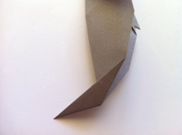
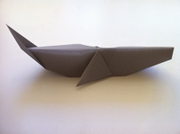

Project 1. Origami Whale Folding Instructions
Difficulty: Medium
Estimated time to Complete: 5-10 Minutes
Materials:Oragami Paper
Step 1: Start with a 6x6 inch square of paper.
Step 2: Fold the paper in half on the diagonal axis and crease well and unfold.
Step 3: Fold the lower left and right edges to the center, then unfold.
Step 4: Now fold the upper left and right edges to the center, then unfold.
Step 5: Fold the top corner to the bottom corner, then unfold.
Step 6: This step is for the fins. Pinch the left and right corners with both hands and bring the corners to meet at the center.
Step 7: Fold the fins back against the top half.
Step 8: Fold the top corner down until it meets with the corners of the fin, then unfold.
Step 9: Turn the figure over.
Step 10: Fold the top corner down at the crease you made from Step 8.
Step 11: Fold in a portion of the left and right corners. Be sure to make them as even as possible.
Step 12: Fold in half by folding the entire right side of the figure over to the left.
Step 13: Fold down the fin (loose flap).
Step 14: Turn over.
Step 15: Now fold down the other fin.
Step 16: Create the tail by folding the bottom corner of the figure to the side, then unfold.
Step 17: Open the whale and bend the tail backwards along the crease. Both sides of the tail should wrap around the edge.
Step 18: Your tail should look like this.

Your finished whale should look like this!
